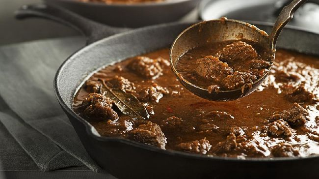

Ikan Bakar Manokwari
Ikan segar yang dibakar dengan bumbu khas Papua, disajikan dengan sambal khas Manokwari yang pedas dan segar.

Tahu Kuning
Tahu khas Kediri berwarna kuning dengan tekstur lembut di dalam dan renyah di luar. Biasanya disajikan dengan sambal petis.

Sie Reuboh
Daging sapi atau kambing yang dimasak dengan cuka, cabai, dan rempah khas Aceh, menghasilkan cita rasa asam, pedas, dan gurih.